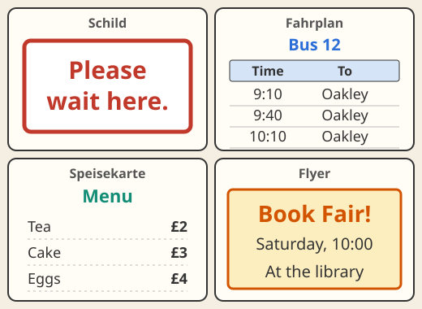

Schilder, Fahrpläne und Speisekarten lesen
Mit einem KI-Tutor lernen
Ein KI-Tutor erklärt dir diese Seite und hilft dir bei den Aufgaben. Wähl deinen Assistenten:
Mit Claude öffnen Mit ChatGPT öffnen Mit Mistral Vibe öffnen
Du nutzt dein eigenes Konto beim Anbieter. Der Assistent ist kein Angebot von lernapps.net: lernapps liefert nur Inhalte und Aufgaben. Die Wahl gilt für alle Seiten, nur auf diesem Gerät.
Ein Schild an der Tür

Von links: Sophie (blonde Zöpfe) und Ellie (roter Pferdeschwanz) vor der bakery.
Quelle: eigene Zeichnung. Lizenz: CC-BY-4.0.Sophie und Ellie sind auf der High Street. An der Tür der bakery hängt ein kleiner Zettel. Sophie ist unsicher, ob sie alles versteht. Ellie sagt: „Du musst nicht jedes Wort verstehen. Schau erst, was für ein Text das ist.“
Aufgabe
Lösung
Er ist kurz und sagt, was man tun soll. richtige Antwort
Ein Schild hat nur wenige Wörter. Es sagt dir, was du tun sollst oder wie es ist.
Er hat eine Tabelle mit vielen Uhrzeiten.
Eine Tabelle mit Uhrzeiten ist ein Fahrplan. Der Zettel an der Tür hat nur wenige Wörter und keine Uhrzeiten.
Er hat eine Liste mit Gerichten und Preisen.
Eine Liste mit Gerichten und Preisen ist eine Speisekarte. Der Zettel hat keine Preise.
Ellie erkennt das Schild an seiner Länge und an seinem Inhalt. Drei Wörter, die sagen, was man tun soll, sind typisch für ein Schild.
Das kannst du danach: Ich kann Alltagstexte wie Fahrpläne, Speisekarten, Flyer und Schilder erkennen und ihnen gezielt Informationen entnehmen. Die Zahlen und Preise brauchst du dafür schon.
Erst die Textsorte, dann die Information
Auf der High Street gibt es viele kurze Texte. Du erkennst sie am Aussehen. Danach suchst du eine Information, zum Beispiel eine Uhrzeit oder einen Preis. Das gelingt auch, wenn du viele Wörter nicht kennst.

Vier Textsorten auf der High Street (eigene Zeichnung).
Quelle: eigene Zeichnung. Lizenz: CC-BY-4.0.Merke
Ein Schild ist kurz und sagt, was man tun soll oder wie es ist. Ein Fahrplan ist eine Tabelle mit Uhrzeiten und Zielen. Eine Speisekarte zeigt Gerichte mit Preisen. Ein Flyer nennt einen Ort, einen Tag und eine Uhrzeit. Eine Uhrzeit hat einen Doppelpunkt (9:30), ein Preis hat das Zeichen £. Im Fahrplan ist leaves die Abfahrt und arrives die Ankunft.
| Ausdruck | Bedeutung |
|---|---|
| sign | Schild |
| timetable | Fahrplan |
| menu | Speisekarte |
| flyer | Flyer (ein Blatt mit Werbung) |
| closed | geschlossen (das Gegenteil von open) |
| half past | nach halb (half past two ist 2:30, nicht 1:30) |
| back at | zurück um |
Übung
Aufgabe
Lösung
Richtige Antwort: No dogs, please. – Schild; Bus 4 · 8:05 · 8:35 · 9:05 – Fahrplan; Pizza £7 · Coffee £2 – Speisekarte; Party at the park · Friday · 6:00 – Flyer
Das kurze „No dogs, please.“ ist ein Schild. Die Uhrzeiten gehören zu einem Fahrplan, die Preise zu einer Speisekarte. Der Ort mit Tag und Uhrzeit steht auf einem Flyer.
Aufgabe
Lösung
£4.50 richtige Antwort
Das ist der Preis der Suppe. Ein Preis hat das Zeichen £.
£3.50
£3.50 ist der Preis vom Sandwich, nicht von der Suppe.
4:50
4:50 ist eine Uhrzeit, kein Preis. Ein Preis hat das Zeichen £.
Auf der Speisekarte steht die Suppe mit £4.50. Du musst die anderen Zeilen nicht lesen.
Aufgabe
Schau auf den Fahrplan und schreibe die Uhrzeit in die Lücke.

Vier Texte von der High Street. Du brauchst nur einen davon.
Quelle: eigene Zeichnung. Lizenz: CC-BY-4.0.Tipp
Suche die Überschrift leaves oder arrives und lies die Zeile des Zuges.
- Du willst wissen, wann der erste Zug in Fairfield ankommt. → The first train arrives at ….
- Du willst wissen, wann der letzte Zug abfährt. → The last train leaves at ….
Lösung
- The first train arrives at 9:50.
- The last train leaves at 11:20.
Aufgabe
Lösung
Room 5 richtige Antwort
Das ist der Ort. where fragt nach dem Ort.
Friday
Friday ist der Tag. Danach fragt when oder what day.
4:30
4:30 ist die Uhrzeit. Danach fragt what time.
Ein Flyer nennt Ort, Tag und Uhrzeit. where fragt nach dem Ort, hier Room 5.
Aufgabe
Lösung
Richtige Antwort: Die Aussage stimmt nicht.
Closed heißt, dass der Laden jetzt zu ist, und nicht, dass er gleich schließt. Back at 2:30 sagt, dass er um 2:30 wieder da ist. Peter hat closed als Schließzeit gelesen.
Aufgabe
Schreibe jede Information als englischen Satz auf.
Tipp
Lies die Zahl genau. Eine Uhrzeit ist keine Preisangabe, und ein Tag braucht on.
- Der Zug fährt um 8:45 ab.
- Die Milch kostet ein Pfund fünfzig.
- Der Club ist am Freitag.
Lösung
- The train leaves at 8:45. (auch richtig: The train leaves at 8.45.; The train leaves at quarter to nine.; The train leaves at a quarter to nine.; The train leaves at eight forty-five.)
- The milk is £1.50. (auch richtig: The milk is one pound fifty.; The milk is a pound fifty.; The milk is one pound and fifty pence.; The milk costs £1.50.; The milk costs one pound fifty.; The milk costs a pound fifty.; The milk costs one pound and fifty pence.)
- The club is on Friday.
Aufgabe
Hör zu und schreibe, was du hörst.
- KI
- KI
- KI
Lösung
- The shop opens at nine on Saturday. (auch richtig: The shop opens at 9:00 on Saturday.; The shop opens at nine o'clock on Saturday.; The shop opens at 9 on Saturday.)
- The cake is five pounds fifty today. (auch richtig: The cake is £5.50 today.)
- The last bus leaves at ten to nine tonight. (auch richtig: The last bus leaves at 8:50 tonight.; The last bus leaves at eight fifty tonight.)
Selbst sagen und schreiben
Aufgabe
Hör zu, sprich nach und nimm dich auf. Vergleiche dann mit dem Original.
Tipp
Hör den Satz zuerst. Sprich dann langsam nach und achte auf die Zahlen.
- When does the next bus leave for Fairfield?KI
- How much is the apple juice today?KI
- The club starts at four on Friday afternoon.KI
Zum Aufnehmen braucht diese Aufgabe JavaScript. Die Beispiele kannst du auch ohne anhören.
Lösung
- When does the next bus leave for Fairfield?
- How much is the apple juice today?
- The club starts at four on Friday afternoon.
Offene Aufgabe
Mr Hill möchte ein Schild für eure Klassentür. Schreibe das Schild auf Englisch: zwei bis vier kurze Zeilen mit einem Hinweis und einer Uhrzeit oder einem Tag.
Eine gute Antwort enthält:
Lösung
Please wait here. Open: Monday to Friday, 8:30 to 1:00. Closed on Saturday.
Weiter durch Millbrook
Die bakery ist offen. Sophie und Ellie gehen weiter die High Street entlang. Im Fenster des clothes shop sieht Sophie eine Mütze. Peters Mütze ist alt. Wie fragt man im Laden nach Größe und Preis? Das erfährst du auf der nächsten Seite.